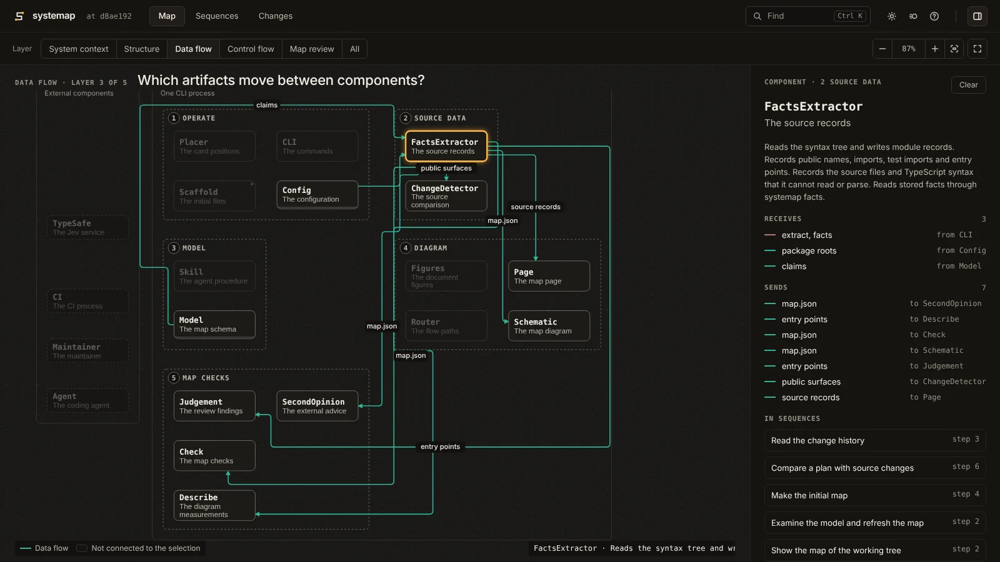
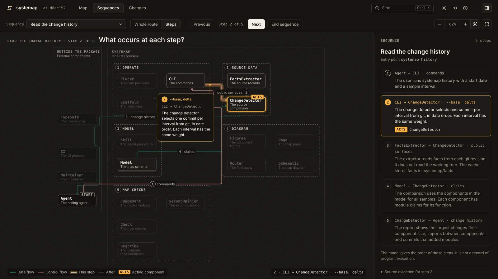
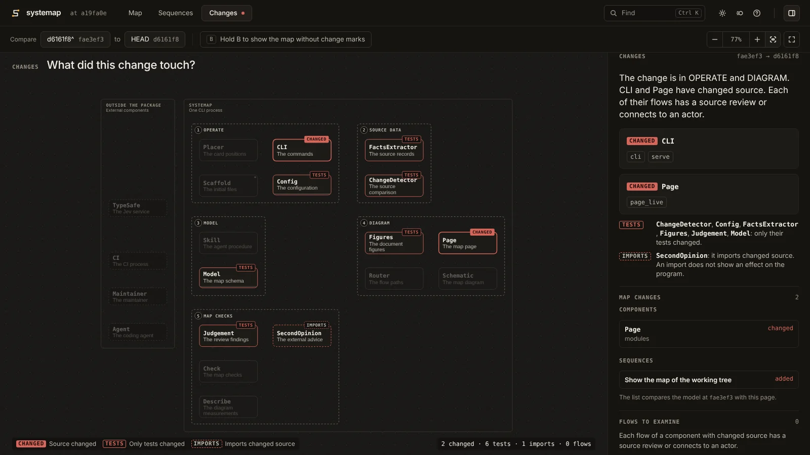

For Python and TypeScript
See what your coding agents are building.
Your agent draws a map of your system from the code. CI checks the map against the code. Each pull request shows what changed in the system.



Not an import graph. Not a drawing.
Import graph
Shows every import. Does not show what each part does, or where the data goes.
Diagram
Shows what the team intends. After the next change, nothing tells you that it is wrong.
systemap
Shows what each part does and where the data goes. CI tells you when the map and the code disagree.
How it works
-
The agent writes
Your agent draws the map
The agent reads your code with the systemap skill. It writes the parts, the flows between them, and the steps of each operation.
# map/model.py Component( id="Orders", does="Calculates the total of the order lines.", interface="total(order) -> float", implemented_by=("shop.orders",), entry="total", region="run", ), Flow("Person", "CommandLine", "order path", "data"), -
CI checks
CI checks the map against the code
Each module must be in one part. A flow line must not go through an unrelated part. A part with changed code needs a new review.
$ systemap check --brief coverage: 89 of 90 modules mapped unmapped: systemap.notify (no component has this module claim)A new module,
systemap/notify.py, is in no part of the map. The command exits with code 1. -
Each pull request
See what a pull request changed
The diff shows lines. systemap shows the parts that changed and the map updates that they need.
$ systemap delta --base d6161f8^ --head d6161f8 --no-jev --brief delta: d6161f8^ (fae3ef3) -> d6161f8: 2 modules changed, 1 added, 0 removed, 0 moved. 2 of 16 components specified The map needs an update (2): source review: CLI has changed code in systemap.cli, systemap.serve. Compare its description, flows, sequences, and invariants with the new source. source review: Page has changed code in systemap.page_live. Compare its description, flows, sequences, and invariants with the new source. No action is necessary for these changes (1): added: systemap.page_live, with a claim in PageCommit d6161f8 added
systemap live.
Claude Code
Watch the map while your agent works
The systemap plugin shows the live map above the prompt. After each turn that changes files, the map updates. Type /map to open it.
/plugin marketplace add 0xfauzi/systemap
/plugin install systemap@systemapOther coding agents use the same skill. Coding agents
Start
Give your agent the instruction that systemap init prints. Get started gives each step.
uv tool install systemap
systemap init # the configuration, the agent skill and a CI workflow
# Your agent writes map/model.py.
systemap checkWhat it does not do
- It does not run your program. A clean check shows that the map agrees with the code. It does not show that the code works.
- It reads Python and TypeScript only.
- Your agent writes the map. Review it as you review code.